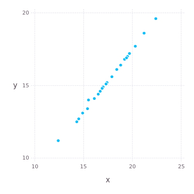

Flux tutorial
Flux: The Julia Machine Learning Library
Flux is a library for machine learning. It comes "batteries-included" with many useful tools built in, but also lets you use the full power of the Julia language where you need it. The whole stack is implemented in clean Julia code (right down to the GPU kernels) and any part can be tweaked to your liking.
The project URL.
1 Installation
Install Julia 0.6.0 or later, if you haven't already.
Pkg.add("Flux")
# Optional but recommended
Pkg.update() # Keep your packages up to date
Pkg.test("Flux") # Check things installed correctly
Start with the basics. The model zoo is also a good starting point for many common kinds of models.
println(":: Julia initialization! ::")
Pkg.update()
:: Julia initialization! :: INFO: Updating METADATA... INFO: Computing changes... INFO: No packages to install, update or remove
See GPU support for more details on installing and using Flux with GPUs.
2 Model-Building Basics
2.1 Taking Gradients
Consider a simple linear regression, which tries to predict an output array y from an input x. (It's a good idea to follow this example in the Julia repl.)
W = rand(2, 5) b = rand(2) predict(x) = W*x .+ b loss(x, y) = sum((predict(x) .- y).^2) x, y = rand(5), rand(2) # Dummy data loss(x, y) # ~ 3
2×5 Array{Float64,2}:
0.174258 0.750107 0.319624 0.145033 0.735474
0.664298 0.932769 0.214092 0.664086 0.797072
2-element Array{Float64,1}:
0.390068
0.815136
predict (generic function with 1 method)
loss (generic function with 1 method)
([0.224385, 0.338351, 0.279211, 0.54581, 0.833118], [0.538516, 0.216036])
5.479478967184904
Addendum: Using fixed data.
using DataFrames; using CSV; data = CSV.read("./data.csv") size(data) names(data)
INFO: Recompiling stale cache file /home/sergio/.julia/lib/v0.6/CodecZlib.ji for module CodecZlib.
INFO: Recompiling stale cache file /home/sergio/.julia/lib/v0.6/DataFrames.ji for module DataFrames.
INFO: Recompiling stale cache file /home/sergio/.julia/lib/v0.6/CSV.ji for module CSV.
23×2 DataFrames.DataFrame
│ Row │ X │ Y │
├─────┼──────┼──────┤
│ 1 │ 12.4 │ 11.2 │
│ 2 │ 14.3 │ 12.5 │
│ 3 │ 14.5 │ 12.7 │
│ 4 │ 14.9 │ 13.1 │
│ 5 │ 16.1 │ 14.1 │
│ 6 │ 16.9 │ 14.8 │
│ 7 │ 16.5 │ 14.4 │
│ 8 │ 15.4 │ 13.4 │
⋮
│ 15 │ 15.5 │ 14.0 │
│ 16 │ 16.7 │ 14.6 │
│ 17 │ 17.3 │ 15.1 │
│ 18 │ 18.4 │ 16.1 │
│ 19 │ 19.2 │ 16.8 │
│ 20 │ 17.4 │ 15.2 │
│ 21 │ 19.5 │ 17.0 │
│ 22 │ 19.7 │ 17.2 │
│ 23 │ 21.2 │ 18.6 │
(23, 2)
2-element Array{Symbol,1}:
:X
:Y
Now lets replicate the previous regression steps.
W = rand(2, 5) b = rand(2) predict(x) = W*x .+ b loss(x, y) = sum((predict(x) .- y).^2) x, y = data[1:5, :X], data[1:2, :Y] # Dummy data loss(x, y) # ~ 3
2×5 Array{Float64,2}:
0.321359 0.254585 0.312787 0.94669 0.551409
0.475509 0.403494 0.489568 0.0585563 0.435709
2-element Array{Float64,1}:
0.370281
0.907944
predict (generic function with 1 method)
loss (generic function with 1 method)
(Union{Float64, Missings.Missing}[12.4, 14.3, 14.5, 14.9, 16.1], Union{Float64, Missings.Missing}[11.2, 12.5])
818.0080815776166
To improve the prediction we can take the gradients of W and b with respect to the loss function and perform gradient descent. We could calculate gradients by hand, but Flux will do it for us if we tell it that W and b are trainable parameters.
using Flux.Tracker
W = param(W)
b = param(b)
l = loss(x, y)
back!(l)
Tracked 2×5 Array{Float64,2}:
0.321359 0.254585 0.312787 0.94669 0.551409
0.475509 0.403494 0.489568 0.0585563 0.435709
Tracked 2-element Array{Float64,1}:
0.370281
0.907944
818.0080815776166 (tracked)
loss(x, y) returns the same number, but it's now a tracked value
that records gradients as it goes along. Calling back! then
accumulates the gradient of W and b. We can see what this gradient
is, and modify W to train the model.
using Flux.Tracker: grad, update! Δ = grad(W) # Update the parameter and reset the gradient update!(W, -0.1Δ) loss(x, y) # ~ 2.5
2×5 Array{Float64,2}:
602.999 695.394 705.12 724.571 782.926
373.497 430.726 436.75 448.798 484.943
Tracked 2×5 Array{Float64,2}:
-59.9785 -69.2848 -70.1992 -71.5105 -77.7412
-36.8742 -42.6691 -43.1854 -44.8213 -48.0586
3.571226543305759e7 (tracked)
The loss has decreased a little, meaning that our prediction x is
closer to the target y. If we have some data we can already try
training the model.

Figure 1: Simple linear regression
using GLM ols = lm(@formula(Y ~ X), data) GLM.stderror(ols) GLM.predict(ols)
StatsModels.DataFrameRegressionModel{GLM.LinearModel{GLM.LmResp{Array{Float64,1}},GLM.DensePredChol{Float64,Base.LinAlg.Cholesky{Float64,Array{Float64,2}}}},Array{Float64,2}}
Formula: Y ~ 1 + X
Coefficients:
Estimate Std.Error t value Pr(>|t|)
(Intercept) 0.434584 0.177049 2.45461 0.0229
X 0.851144 0.0100458 84.7259 <1e-27
2-element Array{Float64,1}:
0.177049
0.0100458
23-element Array{Float64,1}:
10.9888
12.6059
12.7762
13.1166
14.138
14.8189
14.4785
13.5422
14.904
15.6701
⋮
13.6273
14.6487
15.1594
16.0956
16.7766
15.2445
17.0319
17.2021
18.4788
All deep learning in Flux, however complex, is a simple generalisation of this example. Of course, models can look very different – they might have millions of parameters or complex control flow, and there are ways to manage this complexity. Let's see what that looks like.
2.2 Building Layers
It's common to create more complex models than the linear regression
above. For example, we might want to have two linear layers with a
nonlinearity like sigmoid (σ) in between them. In the above style we
could write this as:
using Flux W1 = param(rand(3, 5)) b1 = param(rand(3)) layer1(x) = W1 * x .+ b1 W2 = param(rand(2, 3)) b2 = param(rand(2)) layer2(x) = W2 * x .+ b2 model(x) = layer2(σ.(layer1(x))) model(rand(5)) # => 2-element vector
Tracked 3×5 Array{Float64,2}:
0.411888 0.875844 0.185673 0.210546 0.121761
0.391358 0.587994 0.041861 0.266823 0.203698
0.825134 0.16344 0.0779545 0.921908 0.974163
Tracked 3-element Array{Float64,1}:
0.203049
0.582317
0.0349656
layer1 (generic function with 1 method)
Tracked 2×3 Array{Float64,2}:
0.646053 0.981485 0.838297
0.493253 0.245144 0.446347
Tracked 2-element Array{Float64,1}:
0.942242
0.894073
layer2 (generic function with 1 method)
model (generic function with 1 method)
Tracked 2-element Array{Float64,1}:
2.74306
1.75006
This works but is fairly unwieldy, with a lot of repetition – especially as we add more layers. One way to factor this out is to create a function that returns linear layers.
function linear(in, out) W = param(randn(out, in)) b = param(randn(out)) x -> W * x .+ b end linear1 = linear(5, 3) # we can access linear1.W etc linear2 = linear(3, 2) model(x) = linear2(σ.(linear1(x))) model(x) # => 2-element vector
linear (generic function with 1 method)
(::#3) (generic function with 1 method)
(::#3) (generic function with 1 method)
model (generic function with 1 method)
Tracked 2-element Array{Float64,1}:
-1.91996
-1.19972
Another (equivalent) way is to create a struct that explicitly represents the affine layer.
struct Affine W b end Affine(in::Integer, out::Integer) = Affine(param(randn(out, in)), param(randn(out))) # Overload call, so the object can be used as a function (m::Affine)(x) = m.W * x .+ m.b a = Affine(10, 5) a(rand(10)) # => 5-element vector
Affine
Affine(param([-1.6488 0.376519 … 0.941953 -0.363354; 0.569429 -0.740986 … 1.19353 -0.420238; … ; -0.476403 -1.15401 … -1.82431 0.893862; 2.32319 -1.16424 … -1.01693 -0.51625]), param([-0.467816, -0.854028, -0.959012, 0.468946, 2.09242]))
Tracked 5-element Array{Float64,1}:
0.294692
-1.66658
-3.77026
-0.706733
-0.238175
Congratulations! You just built the Dense layer that comes with Flux. Flux has many interesting layers available, but they're all things you could have built yourself very easily.
(There is one small difference with Dense – for convenience it also
takes an activation function, like Dense(10, 5, σ).)
2.3 Stacking It Up
It's pretty common to write models that look something like:
layer1 = Dense(10, 5, σ) # ... model(x) = layer3(layer2(layer1(x)))
For long chains, it might be a bit more intuitive to have a list of layers, like this:
using Flux layers = [Dense(10, 5, σ), Dense(5, 2), softmax] model(x) = foldl((x, m) -> m(x), x, layers) model(rand(10)) # => 2-element vector
3-element Array{Any,1}:
Dense(10, 5, NNlib.σ)
Dense(5, 2)
NNlib.softmax
model (generic function with 1 method)
Tracked 2-element Array{Float64,1}:
0.849323
0.150677
Handily, this is also provided for in Flux:
model2 = Chain(
Dense(10, 5, σ),
Dense(5, 2),
softmax
)
model2(rand(10)) # => 2-element vector
Chain(Dense(10, 5, NNlib.σ), Dense(5, 2), NNlib.softmax)
Tracked 2-element Array{Float64,1}:
0.522415
0.477585
This quickly starts to look like a high-level deep learning library; yet you can see how it falls out of simple abstractions, and we lose none of the power of Julia code.
A nice property of this approach is that because "models" are just functions (possibly with trainable parameters), you can also see this as simple function composition.
m = Dense(5, 2) ∘ Dense(10, 5, σ) m(rand(10))
(::#55) (generic function with 1 method)
Tracked 2-element Array{Float64,1}:
-0.162062
-0.279983
Likewise, Chain will happily work with any Julia function.
m = Chain(x -> x^2, x -> x+1) m(5) # => 26
Chain(#7, #8) 26
2.4 Layer helpers
Flux provides a set of helpers for custom layers, which you can enable by calling
Flux.treelike(Affine)
This enables a useful extra set of functionality for our Affine layer, such as collecting its parameters or moving it to the GPU.
3 Recurrent Models
3.1 Recurrent Cells
In the simple feedforward case, our model m is a simple function from various inputs xᵢ to predictions yᵢ. (For example, each x might be an MNIST digit and each y a digit label.) Each prediction is completely independent of any others, and using the same x will always produce the same y.
y₁ = f(x₁) y₂ = f(x₂) y₃ = f(x₃) # ...
Recurrent networks introduce a hidden state that gets carried over each time we run the model. The model now takes the old h as an input, and produces a new h as output, each time we run it.
h = # ... initial state ... h, y₁ = f(h, x₁) h, y₂ = f(h, x₂) h, y₃ = f(h, x₃) # ...
Information stored in h is preserved for the next prediction, allowing
it to function as a kind of memory. This also means that the
prediction made for a given x depends on all the inputs previously fed
into the model.
(This might be important if, for example, each x represents one word of a sentence; the model's interpretation of the word "bank" should change if the previous input was "river" rather than "investment".)
Flux's RNN support closely follows this mathematical perspective. The
most basic RNN is as close as possible to a standard Dense layer,
and the output is also the hidden state.
Wxh = randn(5, 10) Whh = randn(5, 5) b = randn(5) function rnn(h, x) h = tanh.(Wxh * x .+ Whh * h .+ b) return h, h end x = rand(10) # dummy data h = rand(5) # initial hidden state h, y = rnn(h, x)
5×10 Array{Float64,2}:
-0.335602 -0.743067 1.56416 -0.745028 -1.31895 0.828944 0.307544 -2.13057 0.565697 1.62416
-0.296219 -0.628833 0.567573 -0.60324 -0.0924562 1.81886 -0.29517 -1.06414 -0.417291 0.0375811
0.311554 -1.3975 0.0653115 -1.36585 -0.0732771 0.307589 -1.01955 0.724853 -1.22862 1.11857
-0.22783 -0.330792 0.822159 1.80235 0.177961 1.56767 1.43587 -0.448002 0.277141 0.840428
-0.25141 1.55337 -1.85621 0.817607 -0.822015 -2.55036 0.620046 2.00377 1.4629 -1.44022
5×5 Array{Float64,2}:
0.161084 1.58312 -1.47054 0.0423842 -1.11387
-0.0640146 1.84554 0.148866 1.02162 0.197515
0.100668 0.184159 -0.86423 -0.156539 -0.176746
-0.965176 -1.3083 0.81521 -0.0504029 -0.546809
0.716647 -0.711621 -1.4207 1.78595 -1.81752
5-element Array{Float64,1}:
1.55872
-0.0863359
0.292448
-0.215982
1.09435
rnn (generic function with 1 method)
10-element Array{Float64,1}:
0.704938
0.643769
0.416595
0.70418
0.783186
0.817874
0.853267
0.598577
0.831481
0.721251
5-element Array{Float64,1}:
0.077753
0.624197
0.9162
0.798651
0.761921
([0.083027, 0.916704, -0.991142, 0.99861, -0.636675], [0.083027, 0.916704, -0.991142, 0.99861, -0.636675])
If you run the last line a few times, you'll notice the output y
changing slightly even though the input x is the same.
We sometimes refer to functions like rnn above, which explicitly
manage state, as recurrent cells. There are various recurrent cells
available, which are documented in the layer reference. The
hand-written example above can be replaced with:
using Flux rnn2 = Flux.RNNCell(10, 5) x = rand(10) # dummy data h = rand(5) # initial hidden state h, y = rnn2(h, x)
RNNCell(10, 5, tanh)
10-element Array{Float64,1}:
0.77719
0.5867
0.918167
0.771562
0.198712
0.726097
0.77191
0.868939
0.880878
0.818349
5-element Array{Float64,1}:
0.39893
0.895915
0.21959
0.138349
0.219127
(param([-0.595215, 0.815866, -0.927057, 0.854788, 0.223998]), param([-0.595215, 0.815866, -0.927057, 0.854788, 0.223998]))
3.2 Stateful Models
For the most part, we don't want to manage hidden states ourselves,
but to treat our models as being stateful. Flux provides the Recur
wrapper to do this.
x = rand(10) h = rand(5) m = Flux.Recur(rnn, h) y = m(x)
10-element Array{Float64,1}:
0.864184
0.727019
0.152897
0.596222
0.696429
0.795441
0.970867
0.756388
0.309554
0.270187
5-element Array{Float64,1}:
0.286996
0.820282
0.469629
0.730869
0.669104
Recur(rnn)
5-element Array{Float64,1}:
-0.458061
0.91275
-0.966963
0.957575
0.682724
The Recur wrapper stores the state between runs in the m.state
field.
If you use the RNN(10, 5) constructor – as opposed to RNNCell –
you'll see that it's simply a wrapped cell.
RNN(10, 5)
Recur(RNNCell(10, 5, tanh))
3.3 Sequences
Often we want to work with sequences of inputs, rather than individual
x.
seq = [rand(10) for i = 1:10]
10-element Array{Array{Float64,1},1}:
[0.26384, 0.511612, 0.410464, 0.628855, 0.400572, 0.356883, 0.650063, 0.832428, 0.803437, 0.619356]
[0.0558729, 0.55321, 0.111685, 0.847347, 0.231906, 0.421247, 0.535692, 0.967631, 0.151788, 0.543204]
[0.563864, 0.0166117, 0.155863, 0.397863, 0.871601, 0.558577, 0.12065, 0.292529, 0.0516992, 0.0147827]
[0.732378, 0.886645, 0.619666, 0.229015, 0.34623, 0.620486, 0.263806, 0.409757, 0.941559, 0.42633]
[0.629197, 0.879354, 0.690331, 0.932031, 0.828211, 0.0850166, 0.216663, 0.973238, 0.850589, 0.792926]
[0.279912, 0.770641, 0.782412, 0.279212, 0.455268, 0.0319396, 0.636586, 0.0350002, 0.670798, 0.592461]
[0.745074, 0.189212, 0.722463, 0.491579, 0.893423, 0.958347, 0.405673, 0.81953, 0.313067, 0.754308]
[0.15898, 0.204461, 0.0246603, 0.368311, 0.514293, 0.081758, 0.611936, 0.861855, 0.604147, 0.651089]
[0.0211448, 0.586099, 0.20338, 0.971617, 0.80417, 0.986488, 0.407577, 0.26519, 0.467627, 0.643396]
[0.50283, 0.0831621, 0.403768, 0.362624, 0.00741494, 0.173167, 0.837751, 0.335071, 0.964773, 0.753252]
With Recur, applying our model to each element of a sequence is
trivial:
m.(seq) # returns a list of 5-element vectors
10-element Array{Array{Float64,1},1}:
[0.994967, 0.85456, -0.640273, 0.760783, 0.998368]
[0.821612, 0.764942, -0.387668, -0.414733, 0.997903]
[0.701053, 0.841691, 0.469026, -0.777716, -0.982692]
[0.998918, 0.14712, -0.876748, 0.855405, 0.685643]
[0.650053, -0.850078, -0.780308, 0.350226, 0.99994]
[0.922316, -0.965164, -0.902312, 0.92306, 0.971687]
[0.228973, -0.526887, 0.70814, 0.990793, 0.696663]
[-0.980654, -0.890894, -0.892708, 0.983864, 0.995825]
[0.0141673, -0.289343, -0.903104, 0.999929, 0.72949]
[0.996927, -0.417548, -0.532885, 0.966277, 0.99871]
This works even when we've chain recurrent layers into a larger model.
m = Chain(LSTM(10, 15), Dense(15, 5)) m.(seq)
Chain(Recur(LSTMCell(10, 15)), Dense(15, 5))
10-element Array{TrackedArray{…,Array{Float64,1}},1}:
param([-0.0345502, -0.0403766, 0.00558828, 0.0442483, -0.0169786])
param([-0.0675349, 0.00197485, -0.0297345, 0.02987, -0.0444642])
param([-0.0693338, 0.0209713, -0.0220656, 0.0911402, -0.00945156])
param([-0.0801739, -0.0261297, -0.00825265, 0.204538, -0.0212383])
param([-0.110197, -0.0649395, -0.0246703, 0.196527, -0.0645964])
param([-0.0480114, -0.0303197, -0.0907227, 0.216228, -0.0192784])
param([-0.104461, -0.0425815, -0.139016, 0.268567, -0.0400302])
param([-0.0813874, -0.135401, -0.0955492, 0.230069, -0.000189431])
param([-0.0576492, -0.0359034, -0.18636, 0.2428, -0.0569451])
param([0.0116163, -0.0660804, -0.1669, 0.239081, 0.0383325])
3.4 Truncating Gradients
By default, calculating the gradients in a recurrent layer involves
the entire history. For example, if we call the model on 100 inputs,
calling back! will calculate the gradient for those 100 calls. If we
then calculate another 10 inputs we have to calculate 110 gradients –
this accumulates and quickly becomes expensive.
To avoid this we can truncate the gradient calculation, forgetting the history.
Flux.truncate!(m)
m
Chain(Recur(LSTMCell(10, 15)), Dense(15, 5))
Calling truncate! wipes the slate clean, so we can call the model
with more inputs without building up an expensive gradient
computation.
truncate! makes sense when you are working with multiple chunks of a
large sequence, but we may also want to work with a set of independent
sequences. In this case the hidden state should be completely reset to
its original value, throwing away any accumulated information. reset!
does this for you.
4 Regularisation
Applying regularisation to model parameters is straightforward. We
just need to apply an appropriate regulariser, such as vecnorm, to
each model parameter and add the result to the overall loss.
For example, say we have a simple regression.
using Flux: crossentropy m = Dense(10, 5) loss(x, y) = crossentropy(softmax(m(x)), y)
Dense(10, 5) loss (generic function with 1 method)
We can regularise this by taking the (L2) norm of the parameters,
m.W and m.b.
penalty() = vecnorm(m.W) + vecnorm(m.b) loss(x, y) = crossentropy(softmax(m(x)), y) + penalty()
penalty (generic function with 1 method) loss (generic function with 1 method)
When working with layers, Flux provides the params function to grab
all parameters at once. We can easily penalise everything with
sum(vecnorm, params).
params(m)
2-element Array{Any,1}:
param([0.188884 -0.233068 … -0.459947 -0.397623; -0.265188 0.481616 … 0.0229318 0.588874; … ; -0.302913 0.219138 … -0.330004 0.133575; -0.353293 0.493455 … 0.498129 -0.244323])
param([0.0, 0.0, 0.0, 0.0, 0.0])
sum(vecnorm, params(m))
2.589716546999882 (tracked)
Here's a larger example with a multi-layer perceptron.
m = Chain(
Dense(28^2, 128, relu),
Dense(128, 32, relu),
Dense(32, 10), softmax)
loss(x, y) = crossentropy(m(x), y) + sum(vecnorm, params(m))
loss(rand(28^2), rand(10))
Chain(Dense(784, 128, NNlib.relu), Dense(128, 32, NNlib.relu), Dense(32, 10), NNlib.softmax) loss (generic function with 1 method) 39.73180248438863 (tracked)
One can also easily add per-layer regularisation via the activations
function:
c = Chain(Dense(10,5,σ),Dense(5,2),softmax) Flux.activations(c, rand(10)) sum(vecnorm, ans)
Chain(Dense(10, 5, NNlib.σ), Dense(5, 2), NNlib.softmax)
3-element Array{Any,1}:
param([0.33369, 0.471888, 0.407948, 0.426888, 0.560523])
param([0.119035, -0.823319])
param([0.719575, 0.280425])
2.6025991594948934 (tracked)
5 Model Reference
5.1 Basic Layers
These core layers form the foundation of almost all neural networks.
5.1.1 Flux.Chain — Type.
Chain(layers...)
Chain multiple layers / functions together, so that they are called in sequence on a given input.
using Flux
m = Chain(x -> x^2, x -> x+1) m(5) == 26 m = Chain(Dense(10, 5), Dense(5, 2)) x = rand(10) m(x) == m[2](m[1](x))
Chain(#1, #2)
true
Chain(Dense(10, 5), Dense(5, 2))
10-element Array{Float64,1}:
0.877099
0.406706
0.157071
0.961797
0.708122
0.451322
0.755104
0.0389636
0.437714
0.698057
true
m(x) m[2](m[1](x))
Tracked 2-element Array{Float64,1}:
0.279557
-0.172473
Tracked 2-element Array{Float64,1}:
0.279557
-0.172473
Chain also supports indexing and slicing, e.g. m[2] or
m[1:end-1]. m[1:3](x) will calculate the output of the first three
layers.
Chain function source.
5.1.2 Flux.Dense — Type.
Dense(in::Integer, out::Integer, σ = identity)
Creates a traditional Dense layer with parameters W and b.
y = σ.(W * x .+ b)
The input x must be a vector of length in, or a batch of vectors
represented as an in × N matrix. The out y will be a vector or batch
of length out.
d = Dense(5, 2) d(rand(5))
Dense(5, 2)
Tracked 2-element Array{Float64,1}:
-0.378698
0.621726
5.1.3 Flux.Conv — Type.
Conv(size, in=>out) Conv(size, in=>out, relu)
Standard convolutional layer. size should be a tuple like (2,
2). in and out specify the number of input and output channels
respectively.
Data should be stored in WHCN order. In other words, a 100×100 RGB
image would be a 100×100×3 array, and a batch of 50 would be a
100×100×3×50 array.
Takes the keyword arguments pad, stride and dilation. source